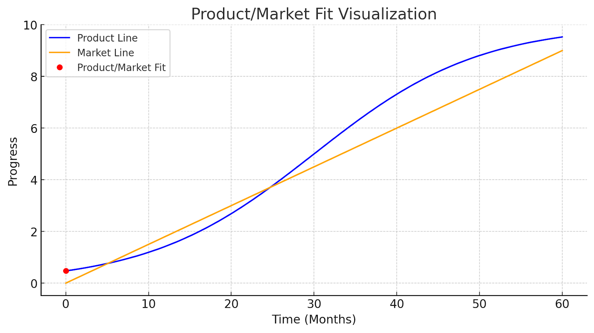

https://www.overleaf.com/project/65888c53b0aeafa566740671
When should a startup create a Platform team? And when they do, should they build everything from scratch or buy off-the-shelf solutions?
Organizational Maturity
The initial internal developer platform is usually outsourced: many engineering teams start with a PaaS offering (such as Heroku, Netlify, or the equivalent) to get their engineering team up and running quickly and to benefit from speed execution and proven scalability, at the price of a highly opinionated approach.
With the service growing and the split into multiple Product teams, the developer environment is likely to get more and more complex to run and to deploy, and the product engineering teams might start:
- Reaching their knowledge limit in their field (infra, pipeline, etc)
- Facing PaaS/FaaS lack of flexibility to truly scale out
- Creating generic dev tooling to automate tasks that would benefit the other teams
The best example is when you include Kubernetes or Infrastructure as Code in your tech stack, or when you start building your own Design System, shared across all the engineering teams. This leads to the developer cognitive load and developer comfort zone issues, described in part 1.
DHH went to the cloud because he believed its the future, made sense initially as a startup, at steady state (PMF, product validated) now we can give to the cloud. At steady state we should not make rogue bet, it becomes a margin game, there is enough evidence to decide NOT to go ot the cloud.
Levels of automation encompass Infrastructure, front-end and backend tooling. Whether it’s the cloud/on-prem or building a platform team vs. hatchling teams (small jack-of-all-trades team to get to a workable PoC) depends on whether you have validated your core product/business idea!

Pre-PMF (Product is not yet validated)
You should prioritize services, to validate whether your CORE business Idea solves a pressing problem! Here thing about services, renting instead of buying (or buying instead of building), this is a phase not a lifestyle.
Post-PMF
You should re-think/engineer and optimize your existing processes to best service your customers (i.e., product developers build the thing that customers interact with, as a platform engineer, you need to make sure you are reducing dependencies and improving time-to-value (time for the developers to build/ship/deploy value-generating things).
Here think about buying instead of renting, you should think about buying (or building instead of buying). You are staying here for a while, you will want to make this feel like home, organized, searchable, and valuable. Engineer away here, but only to serve the business (keep the researcher spirit when allowable but mark them as research).
Multiple definitions of Product Market Fit
-
A key indicator of product-market fit is a flattened retention curve, which shows that a segment of users finds long-term value in the product.
-
When people start sharing and talking about your product could be a leading indicator of retention, which is a more reliable indicator that your business is solving a market problem (hence aka as product-market fit)
-
A product can be a fit at one point in time, then stop being a fit due to environmental factors such as
-
Consumer preferences
-
Might be Impacted by competition (Improvements by competitors that reset the standard for what is considered a good product)
-
Technological advancement (e.g., AI starts solving problems in ways better than existing tooling).
-
Hypothetical Examples
-
Stackoverflow stops answering developer questions as good as it used to (illusion) only because a better technology gives the answer faster.
-
Security scanning tool being replaced with AI…
“Product market fit is a funny term, but here’s a concrete way to think about it. When people understand and use your product enough to recognize it’s value, that’s a huge win. But when they begin to share their positive experience with others, when you can replicate the experience with every new user who your existing users tell, then you have product market fit on your hands. And when this occurs something magical happens. All of a sudden your customers become your salespeople.” ~ Anonymous
For a product to achieve and maintain product-market fit, it must not only meet the current demands of the market but also evolve at a pace that aligns with or exceeds the growth of the market line.
Retention might be a good indicator that the product is “supplying” enough to meet market demand (consumer preferences…). Staying ahead of the curve literally.
Yes, the concept of product-market fit can indeed be generalized to the broader economic principle of supply and demand. In this context:
- Supply represents the product’s performance, features, and capabilities, which are what a company or provider can control. This is analogous to the product line on the graph, which shows how well the product meets market needs over time.
- Demand represents the market’s needs, preferences, and expectations, which are driven by consumers. This is similar to the market line, indicating the level of performance or features that consumers expect from such products at a given time.
When the product line (supply) is below the market line (demand), it indicates that the product is not performing up to the level of market expectations. The product may be lacking in features, quality, or other attributes that the market demands. Strategy is needed here it to diagnose product gaps and make fast decisions to reconcile the curve back.
The intersection point where the product line meets the market line signifies that the product has reached a level where it satisfies demand. The product’s supply matches what consumers are looking for, and it’s at this point that the product is said to have a good fit with the market.
However, if the product line starts to flatten or decline while the market line continues to rise, it means that although the product may have met the market demands at one point, it’s no longer keeping up with the increasing expectations of consumers. This divergence can be the result of several factors, such as new technological innovations, changes in consumer preferences, or new market entrants that change the landscape of demand.
In the real world, companies must continuously innovate and improve their products to maintain their position in the market. If they fail to do so, they risk falling behind as the market evolves without them. This is the challenge of sustaining product-market fit over time in the face of ever-changing market demands.
There is also the risk of overserving or solving the wrong problems, this is where staying in-touch with the market-pulse (or misalignment with what the market needs/price/…).
- Solving the Wrong Problems: If a product focuses on features or problems that the market does not value, the product line may deviate in a direction that never intersects with the market line. This represents a misalignment with market needs.
- Overserving: This occurs when the product exceeds what the market requires or is willing to pay for. Graphically, this might be represented by the product line overshooting the market line significantly. While the product technically meets and surpasses market demands, the additional features may not translate to increased satisfaction or sales if the market does not require them (we may contrast this with marginal utility).
Both scenarios can be risky. Solving the wrong problems means wasted resources on features that don’t bring value to the customer. Overserving, on the other hand, can lead to higher costs, complexity, and can actually detract from the user experience if the product becomes too cumbersome or difficult to use.
In the supply and demand graph, these risks can be visualized as follows:\
- The product line veering away from the market line before the intersection suggests solving the wrong problems.
- The product line going far above the market line suggests overserving.
In both cases, these are market inefficiencies and forces that steer the business away from realizing Product Market Fit. If we depict it as a state-machine, it would look like this:
Effects on Market Efficiencies
Mapping market efficiencies involves understanding and visualizing how well a market allocates resources, which includes the production and distribution of goods and services to meet consumer demand. Here’s how various market efficiencies can be represented:
- Allocative Efficiency: Occurs when the market produces the right amount of goods and services demanded by consumers. This can be represented on a graph by a point where the supply and demand curves intersect, indicating the equilibrium price and quantity.
- Productive Efficiency: Occurs when goods and services are produced at the lowest possible cost. This can be visualized as a point on the supply curve that is closest to the origin, representing the point where production is at its most efficient.
- Dynamic Efficiency: Involves the optimal rate of innovation and investment to improve products and services over time. This can be represented by a supply curve that shifts over time, indicating improvements in technology and processes that reduce costs and increase output.
- Pareto Efficiency: A state of allocation where it is impossible to make one individual better off without making at least one individual worse off. This can be illustrated by the Edgeworth Box in economics or the production possibility frontier (PPF).
To map these efficiencies, we can create a graph with supply and demand curves to demonstrate allocative and productive efficiency. We can also show how the supply curve shifts over time for dynamic efficiency. For Pareto efficiency, we would use a different kind of visualization like a PPF graph. Let’s create a simple graph to demonstrate allocative and productive efficiency, which are the most directly related to the supply and demand curves.
Overserving and Marginal Utility
Absolutely, the concept of overserving can be directly related to the economic principle of diminishing marginal utility. Marginal utility refers to the additional satisfaction or benefit a consumer receives from consuming one more unit of a good or service. The law of diminishing marginal utility states that as a consumer consumes more units of a good or service, the additional gain in utility from consuming each additional unit decreases.
In the context of a product, each feature or improvement can be thought of as a “unit” of consumption. Initially, as features are added to a product that meet unfulfilled needs or wants, the marginal utility for consumers increases — they derive more satisfaction from each new feature because it fulfills a specific need. However, once those needs are met, additional features start to contribute less to consumer satisfaction, and can even become overwhelming or unnecessarily complicate the product, leading to a reduction in marginal utility.
Overserving, therefore, can be visualized on the graph as the point where the product line continues to rise above the market line (demand) — indicating the addition of more features or services — while the actual utility or satisfaction derived from those additional features by the consumer does not increase proportionally, and may even decrease.
To graphically represent this, we could show a flattening curve of utility as the product line exceeds the market demand line, reflecting the plateau or decrease in consumer satisfaction despite the increase in product features or performance. Let’s add a utility curve to the graph to illustrate this concept.
In the revised graph, the purple dotted line represents the utility curve that initially increases alongside the product line, indicating that consumers are deriving more satisfaction from additional features. However, as the product begins to overserve (red dashed line), the utility curve flattens out, illustrating the concept of diminishing marginal utility. The point labeled “Diminishing Marginal Utility” is where additional features start to add less value, and may even lead to reduced satisfaction due to increased complexity, unnecessary features, or higher costs without commensurate benefits. This graphical representation ties the economic principle of diminishing marginal utility directly to the risk of overserving in product development.